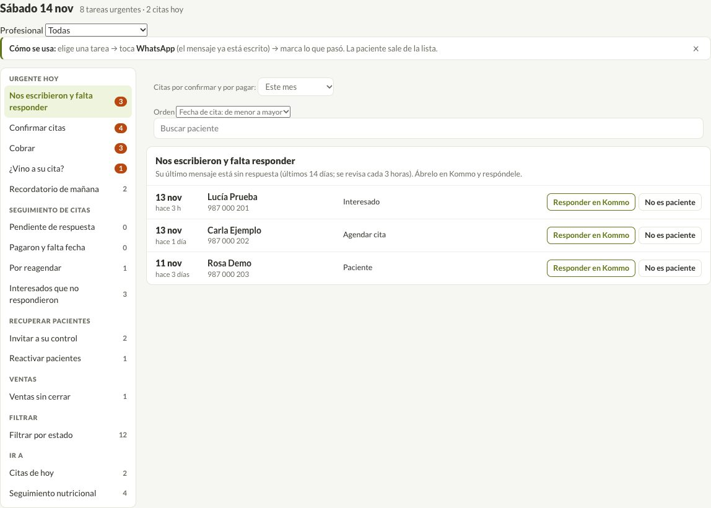
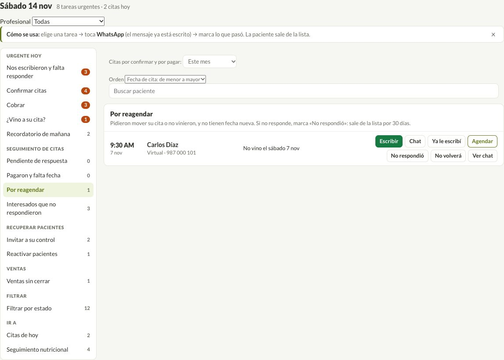
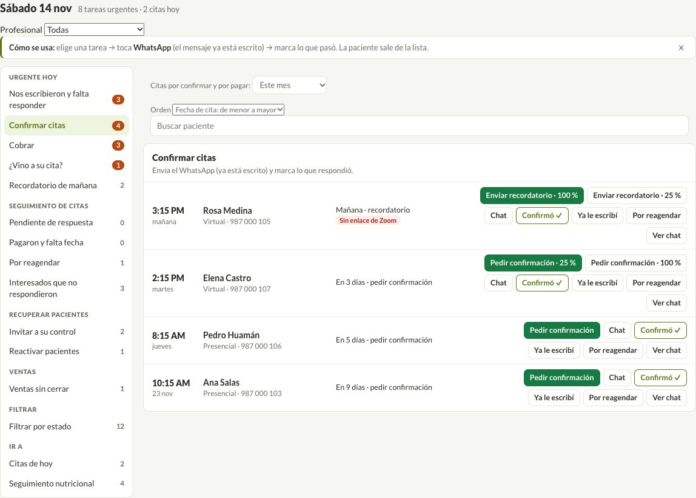
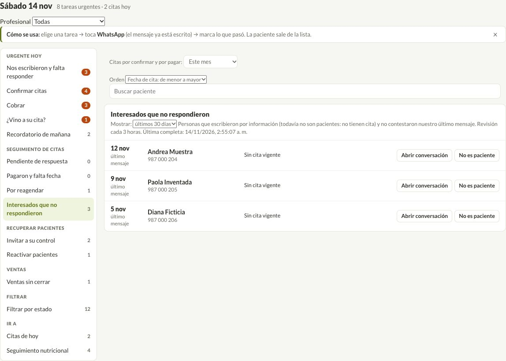
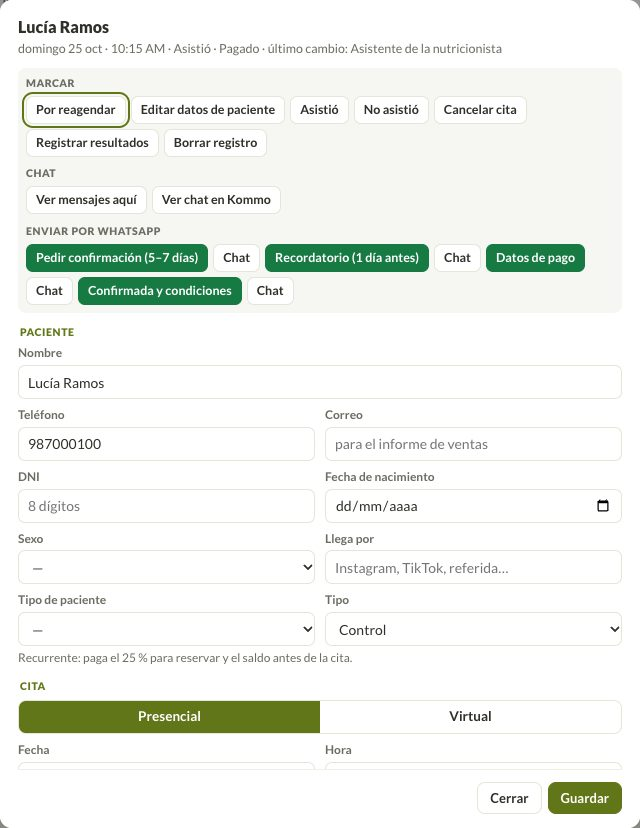
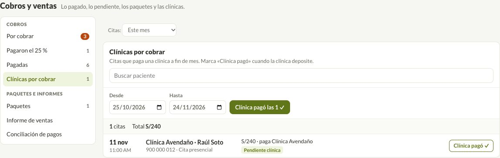

Antes de empezar
- Entra a portal.vanessatello.com.pe/equipo.html con la clave de siempre.
- Si no ves lo nuevo, actualiza la página: Cmd + Shift + R en Mac o Ctrl + F5 en Windows.
- Para probar sin miedo, usa el modo práctica: nada se guarda.
Tareas · Urgente hoy
1. Nos escribieron y falta responder
Personas cuyo último mensaje no tiene respuesta (últimos 14 días). Se revisa sola cada 3 horas.
- Toca Responder en Kommo y contesta ahí.
- Si no es paciente (un amigo, un proveedor), toca No es paciente y sale de la lista.

Tareas · Seguimiento de citas
2. Por reagendar: una sola lista
Juntamos «Reagendar (no vinieron)» y «Por reagendar sin pago». Ya no hay bucle: lo que pasa a «Pendiente de respuesta» no vuelve solo.
- Ya le escribí: pasa a «Pendiente de respuesta».
- No respondió: sale de las listas por 30 días y luego vuelve para escribirle otra vez.
- No volverá: sale de las listas.

Además, una paciente aparece en una sola lista: si está en «Por reagendar» o «Cancelaron», no sale también en «Invitar a su control».
3. Cancelaron: filtro por mes
Arriba eliges el mes. Si es una paciente frecuente, toca Por reagendar para escribirle más adelante.

4. Interesados que no respondieron
Solo personas que pidieron información y nunca tuvieron cita. Ahora salen con su nombre.
- Arriba eliges 7, 30 o 90 días.
- Abrir conversación abre el chat en Kommo.
- No es paciente la saca de la lista.

Dentro de una cita
5. Chat y borrar registro
Toca el nombre de la paciente para abrir su cita.
- Ver mensajes aquí: los últimos mensajes de Kommo, sin salir de la agenda.
- Ver chat en Kommo: abre su conversación en Kommo.
- La etiqueta dice si nos toca responder o si estamos en espera de respuesta del cliente.
- Borrar registro: si se agendó a la persona equivocada. Pide confirmación y queda copia en el historial.

Cobros
6. Clínicas por cobrar
Cobros → Clínicas por cobrar. Las fechas vienen del 25 al 24 (el corte de Avendaño).
- Revisa la lista del corte.
- Cuando la clínica pague, toca Clínica pagó las N ✓ y escribe la fecha real del depósito.

Reportes
7. Excel igual al de Sheilla
- Entra a Reportes.
- Elige Desde y Hasta (o un mes), y si quieres la nutricionista o «llega por».
- Toca ⬇ Descargar Excel: trae 5 hojas (Reporte de citas, Resumen del mes, Pre y post Avendaño, Citas del mes Avendaño y Dr. Salazar - Ximena).
- Para la clínica, toca Corte clínica (25 al 24) y luego descarga.
- Ver pacientes y comisiones muestra nuevos (con y sin Avendaño), por origen, nutricionista, sexo y edad.
Para que salga la edad, la ficha necesita la fecha de nacimiento.
Qué falta
- Tarjeta en Meta Business (mensajes después de 24 h): ver pasos abajo.
- Revisar el bot de la noche: respuestas, horario y si da los precios del Paquete Integral (está apagado).
- Acceso a Google (Sandro).
- Marcar «¿Vino a su cita?».
- Completar teléfonos y fechas de nacimiento que faltan.
- Borrar la cita que se agendó por error el 3 de diciembre.
Cómo registrar la tarjeta en Meta (5 minutos)
- Entra a business.facebook.com/wa/manage con tu cuenta de Facebook.
- Elige la cuenta de WhatsApp de VT Nutrición.
- Ve a Configuración de la cuenta → Pagos (o «Métodos de pago»).
- Toca Agregar método de pago e ingresa tu tarjeta.
- Avísanos y probamos un mensaje con plantilla.
Meta cobra solo los mensajes que se mandan después de 24 horas sin respuesta de la paciente. Lo que Sheilla escribe desde su celular no se cobra.